| Gdh Quests * Gdh2 Quests | |
Green dragon consort quests |
|
| Quest Name | What to do |
| Progression 1 | Kill a Hatchling to obtain his scales. Visit Botanist in the Introduction area |
| Progression 2 | Head to the escapee cave area which is located in the middle west area of Gdh.
Once there look for LucidEscapee and speak to him. Tell him help (Lucid, Help) Kill mercenaries in the area until you've collected 2 Merc twigs.  Type 'Trade enable' in command mode then trade them to Lunches that walk around the Escapee area. (Drag them to the Lunches character box, twig must be in your hand) After trading 10 twigs go back to LucidEscapee and click him to complete the process |
| Progression 3 |
Kill golems until you obtain an essence Obtain a beholder staff from beholder. 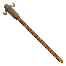 Hold both in hand and right click the staff. Get a party to kill Medusa to obtain her gem. 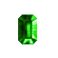 Alternately, you can kill the enemies around Medusa until the gem drops Once you have her gem, Go visit Servant in the golem area. |
| Progression 4 aka Gdh2 | Gather a party to kill FoodGuardian and collect a Climbing rope twig from him.  When this twig is held in your hand, You can climb up to the next area. |
| Combat earring 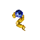 |
Find and kill a hatchling, tan its corpse and pick up the scales. Find Barnalot in the third area of the green dragon hatcheries to trade for it. |
| Farmers robe 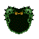 |
Kill gatherers until one drops a feather. take the feather and click farmer to trade for a robe. |
| Vine sash |
Kill Militia who are red until you loot a canteen, collect 20 canteens and trade them to Captain for the sash by saying "captain, Help" |
Vine shield |
Visit the official, he will ask you to save 10 lostfarmers, locate lostfarmers and ask them to follow you. after saving 10 of them, he will reward you with the shield. |
| Needler Ring |
Kill Needlers in the second area of gdh until you obtain a needler heart, Bring the needler heart to Sturderon to receive the ring. |
Green dragon hateries 2 quests |
|
Barb field access |
Speak to Chef located in ghd2, he will ask you to protect him while ke cooks. Protect Chef for 80 rounds, he will thank you when done. Collect 10 apples from merc's and turn them in to Cook  Head over to Danfur near locked door to barb fields, talk to him after completing the above two things to get a key to the door and access to barb fields. |
Beef Jerky |
Obtain 10 bear meats from killing cave bears,  visit Smokie to the NorthEast of the barbarian fields, give him the 10 meats and he will give you some jerky. |
| Improved thermature ring |
Visit near Krog in green dragon hatcheries 2, with both thermature ring and jerky in hand, click him to get the improved ring. |
| Marton robe |
Obtain 1 milky gem and 1 red robe. (both gained by brewing) 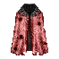 Trade both to marton in Gdh2 for the robe. |
| Vine Bow 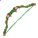 Note: Requires a brewing skill of 11 to complete quest |
Obtain a pure water then bring it to Gipler in the first area of GDH2 in order to trade for the vine bow 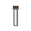 |
| Improved Vine Bow 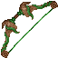 Note: Requires a brewing skill of 11 to complete quest |
Kill mature green dragons until you've collected 3 green dragon tongues 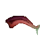 Brew the 3 tongues together with 1 acid potion in order to obtain a blue/grey tongue 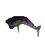 After obtaining the blue/grey tongue, brew it together with the vine bow in order to obtain the improved vine bow |
| Glaive Note: Requires a brewing skill of 11 to complete quest |
Obtain a pure water then bring it to Armon in the first area of GDH2 in order to trade for the glaive |
| Improved Glaive Note: Requires a brewing skill of 11 to complete quest |
Kill young green dragons in the GDH2 area until you obtain a vile of dragon blood 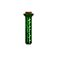 Brew the dragon blood with 3 acid potions in order to make a red vial + 3x 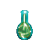 After obtaining the red vial, brew the vial together with the glaive in order to obtain an improved glaive 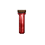 +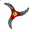 |